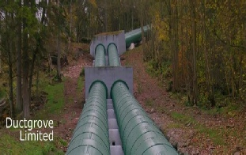
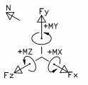

Comprehensive assessment of piping systems subject to pressure, temperature, and mechanical loading. Our expertise includes dynamic and static analysis to ensure safe and compliant designs throughout system lifecycle.

Independent verification and design of pressure equipment and vessels. We provide rigorous analysis supporting safe operation, regulatory compliance, and PED (Pressure Equipment Directive) requirements.

Complete pipeline engineering solutions including design, analysis, and assessment. Our services support bellows specification, spring support design, and snubber specification for complex piping systems.

Engineering assessment and support for extending the operational life of industrial plants. We provide independent technical review to ensure systems remain safe and compliant.
Expert engineering support for complex piping systems, including support design, bellows and snubber specification, and mechanical loading assessment.
We combine rigorous analysis with sound engineering judgement, delivering solutions that are practical, defendable, and buildable.

For pipeline stress analysis, pressure system assessment, or independent engineering review, get in touch.
Email: info@ductgrove.co.uk
Address: Grove House, Kingswood, Warrington, Cheshire, UK
Ductgrove is an independent engineering consultancy with expertise in pipeline stress analysis, pressure vessel design, and plant life extension. We provide practical, defendable engineering solutions backed by rigorous analysis and sound engineering judgement.